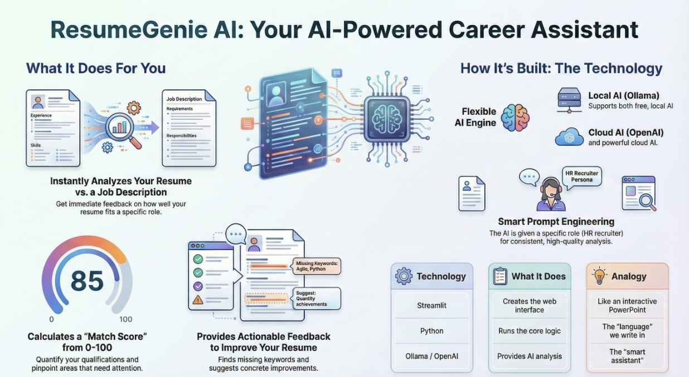
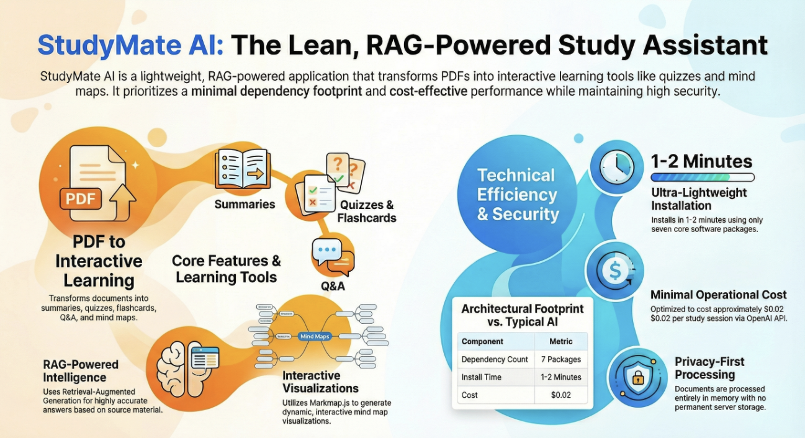
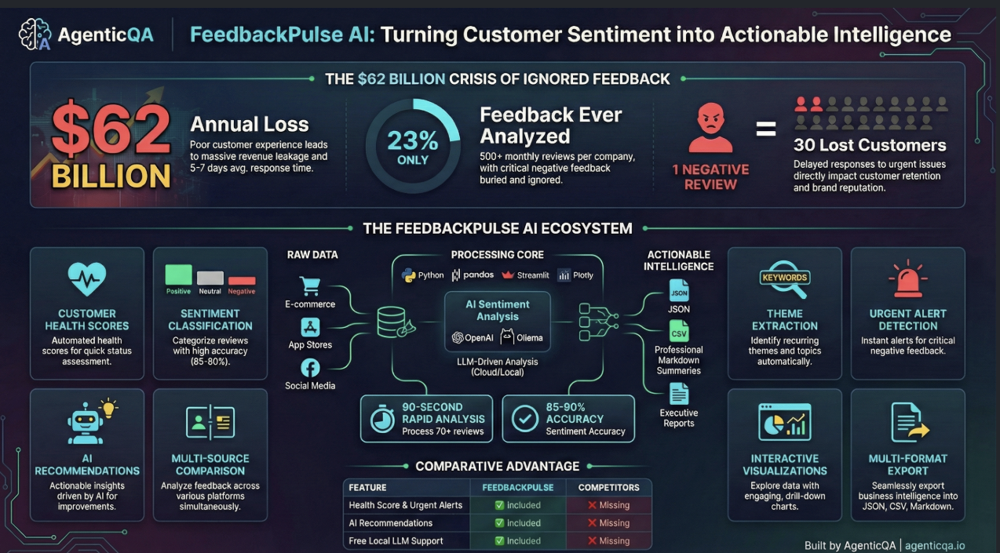

Playwright QA Bootcamp · admissions open
Learn test automation the way industry actually does it.
Go from zero to rebuilding a real framework from scratch — page objects, BDD specs, CI pipelines, and AI agents that triage failures. Taught by a career test architect, not a slideshow.
What you walk out with
A working framework in your GitHub, not a certificate PDF.
- 01Rebuild a framework from an empty folderPage objects, Gherkin specs, fixtures, parallel CI — green on your machine, proven in a day.
- 02Debug like an SDETTraces, screenshots, locator strategy, flake quarantine — the exact workflow teams use on red pipelines.
- 03Ship CI/CD and reportsSharded GitHub Actions runs, HTML + Allure reports, and a failure agent that writes manager-ready root-cause notes.
- 04Automate with AI agentsPlaywright MCP, agent loops, guardrails — build a healer that fixes flaky locators and opens the PR.
- 05Clear interviews30-question bank across 5 days, capstone project to demo, mock-interview scoring rubric.
The syllabus — 13 chapters, zero fluff
Every lesson ends with mistakes to avoid, an exercise, and a quiz.
Foundations
- Zero to automation testing
- What is Playwright
- JavaScript + TypeScript essentials
- BDD with Gherkin
Framework craft
- Page Object Model
- Framework tour (real repo)
- Study checklist + capstone
- Solved rebuild in a day
Professional edge
- Hard topics: iframes, shadow DOM, sessions, Allure
- Interview bank (30 Q&A)
- Architect level: strategy, metrics, flake policy
- Playwright MCP + agents
Ganesan Sivaraman
AI QA Architect · MCP Server Developer · Founder, AgenticQA Technologies LLP
- A full career in software testing before founding AgenticQA
- Builds production AI test systems: RAG, LangChain, MCP servers
- 11+ AI projects shipped, interview-ready with docs
Why learn from him
Taught by someone who shipped, not someone who only teaches.
After a career in testing, Ganesan left his job to teach this full-time. Every lesson in the bootcamp comes from a real failure he has debugged — the flaky logout, the wrong browser revision, the suite that took three hours. You learn the fix, not the theory.
Proof of work
Production AI systems, not toy demos.

ResumeGenie AI
Resume analysis and optimization — poor resumes get no interview calls; this fixes them with LLM feedback.

StudyMate AI
RAG study assistant for large documents — ask questions over PDFs instead of drowning in pages.

FeedbackPulse AI
Batch customer-review sentiment analysis for product teams.
Also from AgenticQA
CatalystAI — exam prep for NEET & JEE.
AI-powered study plans, visual explanations, and doubt-solving for India's toughest entrance exams. A separate track from the QA bootcamp.
NEET track
- Biology, Chemistry, Physics — NCERT-aligned
- Smart flashcards + weak-area focus
JEE track
- Maths, Physics, Chemistry with step-by-step solutions
- Concept maps + daily practice sets
Batch 1 — limited seats
Join the waitlist. Get the free demo class.
Write to us with the subject “Bootcamp Batch 1” and tell us where you are: student, working tester, or lead. We reply with the demo invite and the full syllabus.